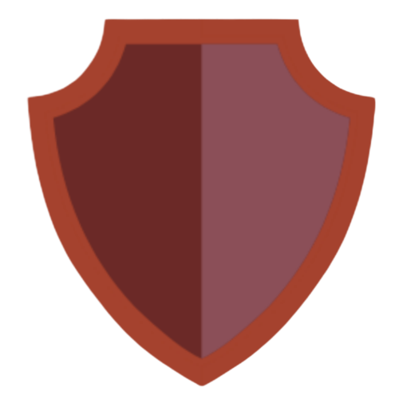
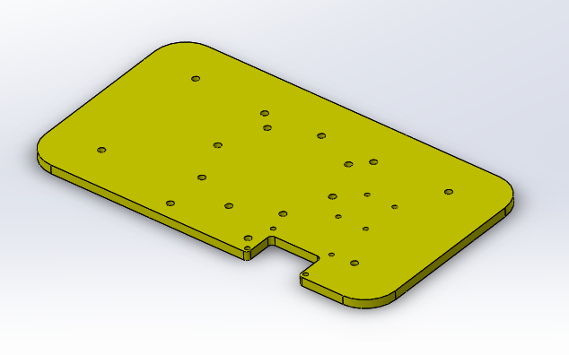

SODABOT
The Inexpensive, Highly Customizable, Snack Delivering Household Robot
Welcome to the Page of the Next Big Thing in the Beverage Industry
We Proudly Present: Sodabot !
Our objective is to make autonomous household robots less wide and more vertical. With control capabilities that allow us to balance vertically structured robots on two wheels, we are capable of achieving tasks with less space on the ground.
Sodabot is the first iterration towards the realization of that task. With its unique vertical structure, it can house a can of cold refreshing beverage to be delivered to the comfort of your couch !
Now, even skipping the halftime commercials is no longer necessary. The reason ? Sodabot !
Meet Sodabot !
Meet the Team
Chi-Kuan Lin - chikuanl@umich.edu
"Sometimes the solution lies in the old fashioned direction of using tape."

Emily Sheetz - esheetz@umich.edu
"Our project comes Team 8 tested, Manni approved."
Joseph Abrash - jabrash@umich.edu
"Inspiration for mathematical derivations can come from the most unexpected of things like a Cottage Inn Pizza plastic plate."
Mohie Amine - mohie@umich.edu
"Sodabot impresses in several domains: A robust control, an accurate localization, and a map runtime that lasts as long as the Mobile Robotics midterm."
Wei Jian - wwjian@umich.edu
"Going up the dimensionality ladder from 2D to 3D is often very challenging. Thankfully, Bresenham's algorithm does not succumb to that rule, and generating 3D maps from Sodabot is now a reality."
The Making of Sodabot
Sodabot was contructed on an acrylic plastic and aluminum chasis. It consists of a lower and a top chasis. The lower chasis houses the motors and the 12 volt battery that powers up Sodabot. The upper chasis houses an RPLidar A2 which provides the necessary sensor reading for Sodabot to map its surrounding and localize itself within it.
Sodabot stems from two robots that are familiar within the robotics institute within UMich: Balancebot, and Mobilebot. Sodabot merges the two robotic systems by re-structuring the upper level of Balancebot, to introduce an RPLidar 2 similar to the upper chassis of Mobilebot. Adding an RPLidar imposes a second major change on the Balancebot's structure, which is the introduction of the Raspberry PI 3B chip alongside the already present Beaglebone Green chip. The team had to make a series of decisions on a) the placement of the chips in a secured and safe location, and b) the new upper chasis of the robot to house the RPLidar and its dependencies.
Balancebot - Sodabot's main structure is derived from this robot.
Mobilebot - Sodabot's upper chasis and chips re-positioning targets the functionality of this robot.

Cad Design of the updated upper chasis of Sodabot.
Laser printed plate of Sodabot's upper chasis.
Finalized Design of the Sodabot. The main take-aways are the chips side mounts, and the entirely new upper chasis.
Acknowldegement
This project is inspired by the two robotic systems Balancebot and Mobilebot of the course ROB550: Robotics Lab course at the University of Michigan. Sodabot's code infrastructure is an extension of the main scripts that are implemented in the two labs, and we credit the lab's code in that regards. We also acknowledge Professor Peter Gaskell (pgaskell@umich.edu) for providing us with a Balancebot chassis and the necessary RPLidar A2 and Raspberry PI in order to realize Sodabot.
Running Sodabot
Sodabot is operated by a Beaglebon Green and a Raspberry PI 3 chip. The two chips communicate over the Lightweight Communications and Marshalling system which handles the publishing and the reception of data acrross the chips as well towards the remotely operating laptop. Sodabot requires binaries to be running on each of the local laptop, the Beaglebone Green chip, and the Raspberry PI.
Setting up the dependencies
Sodabot's system needs LCM and its corresponding dependencies which include the Libbot, LibGUL, and Libboost libraries. The corresponding dependencies can be installed locally on the operating machines form the /Installations folder in the team's github repository. Make sure that the laptop runs Ubuntu 16.04 as the version of java on newer ubuntu version is not supported with LCM. To initiate the flow of LCM messages, the lcm tunnels should be opened up between the three systems. First, Multicast should be setup between the pi and Beaglebone on the Gateway 255.255.255.0. Then, the receiving LCM tunnel on the PI should be opened by running "bot-lcm-tunnel" and preferably allowing it to execute in the background. Finally, from the laptop, open the bot-lcm-tunnel based on the IP address that the Adafruit OLED chip is displaying. Similarly, ensure that the tunnel on the beaglebone is opened up on the ethernet static ip (should be setup to 192.168.1.1)
The Beaglebone
Sodabot's balancing and motion is executed within the Beaglebone. Moreover, the power to all Sodabot's systems is drawn from the Beaglebone's power input. The /Balance folder from the team's github page should then be placed within the Beaglebone. After compiling the code present within the file, running ./mobilebot within the bin folder should get the Sodabot at hand balancing straight away assuming the correct Pololu motors are connected to their correct positions on the UM Robotics Cape which connects to the Beaglebone.
The Raspberry PI
Sodabot's SLAM computation execute on a Raspberry PI 3 B chip. The SLAM runs a Monte-Carlo based localization (using particle filtering). To run the code on a Raspberry PI, the /SLAM folder from the team's github repo should be added into the PI whether via clone or scp. Code should be compiled with the argument "mbot-only" as the OpenGL-related binaries within the folder don't need to be compiled on the PI chip. On your local machine, complie the same folder with the argument "laptop-only". With ./mobilebot on the Beaglebone running, the next step is to set the shaders on the local machine by executing ". sentenv.sh" within the root of the /SLAM folder. Then, ./botgui should be executed from within the bin, opening up the graphics interface. Assuming LCM is properly setup, the gui shoud display the lidar lasers and the odometry readings of the robot. The last step is to execute ./slam from within the bin of the /SLAM folder on the PI. At this stage, if all successful, the gui should display the robot's map being formed. Further detail can be found within the code on our github page.
The Graphs that Define Sodabot
In its very core, Sodabot is a work of engineering that performs state-of-the-art SLAM fitted to accomodate for its Balancing action. Sodabot is fitted to account for the balancing effort and the noise it induces on the Lidar readings. It runs a projection logic to project the Lidar data it receives into their correct positions in the 2D plane that it localizes itself in.
Sodabot's 2D map in which Sodabot maps its environment and localizes itself in. Map was constructed with Lidar ray projection.
A Top-down view of the obtained 3D map utilizing the balancing nature of the robot. Map shows consistency with the 2D map.
A perspective view of the 3D map, displaying construction of discrete map layers in 3D space.
Proof of Operation
Unlike the software-based trend in the UM Course ROB530 - Mobile Robotics, Sodabot is a hardware-based project that is a proof of concept and a physical application of the state of the art. Confirming the functionality of the original aspects of the work is immediately correlated to a physical demonstration of the robot. The robot was presented with all its functionalities operating during the class presentation on 04/18/19. For the sake of completion, we provide a map of our very own ROB530 Class, which was mapped and driven around using Sodabot !
Annotated Map Drawn by the Sodabot of the ROB530 Classroom Area
Future Direction
Sodabot needs a 2D map in order to localize itself. The inverse SLAM sensor model fitted on the robot currently utilizes the nature of the grid cells exclusively within the projected occupancy grid. The project's latest milestone represented by achieving 3D mapping is the needed cornerstone that ensures that SLAM can be performed in the 3D space.